Intro to Physical Oceanography
Instructor: Isidora Rojas (i1rojas@ucsd.edu)
Contents:
What is Physical Oceanography?
Stratification
Water Masses
Circulation/ geostrophy
[3]:
from IPython.display import YouTubeVideo
YouTubeVideo('CCmTY0PKGDs', width=800, height=400)
[3]:
I. What is Physical Oceanography?
Physical oceanography is the study of the physical properties and processes of the ocean. Such as:
general circulation of the ocean
waves and tides
ocean-atmosphere interactions
Understanding PO requires a mathematical toolbox, which includes:
systems of equations/ linear algebra
trigonometry
derivatives
integrals
differential equations
Don’t fret! We will review these concepts throughout the math workshop
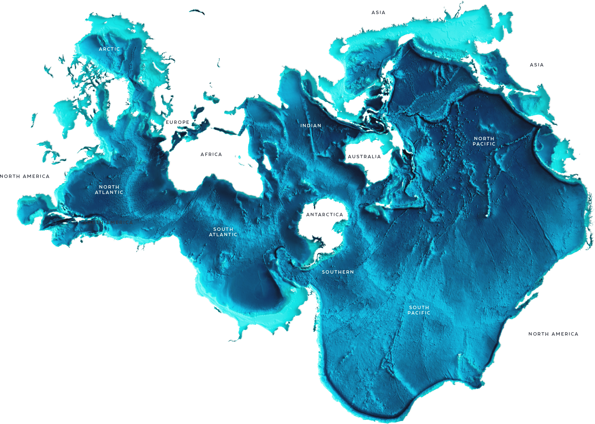
(Map illustrated by Natalie Renier, Woods Hole Oceanographic Institution)
II. Stratification
The ocean is a layererd fluid, with density increasing with depth. The density of seawater is determined by its temperature, salinity, and pressure. In general, colder and saltier water is denser than warmer and fresher water.
1. Pressure and Depth
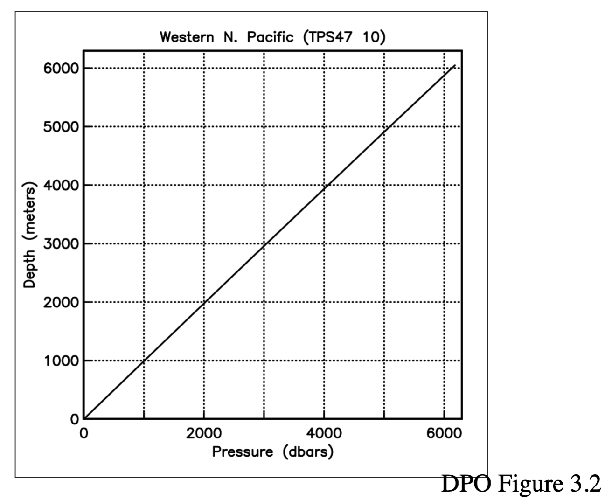
Question: How many decibars of pressure are equivalent to 1 meter of seawater depth?
Math skills: Dimensional Analysis
Common Units in PO | Unit | In SI | Unit of: | |——|————|——-| | 1 N | 1 kg m s $ ^{-2}$ | Force | | Pa | 1 $ kg \cdot `m^{-1} :nbsphinx-math:cdot s^{-2} $ | Pressure | | bar | 10⁵ Pa | Pressure | | atm | 1.013 × 10⁵ Pa | Pressure | | 1 J | 1 kg m :math:`^2 s ^{-2} = 1 N m | Energy | | 1 W | 1 J $ s ^{-1}$ = 1 kg m $ ^2 s ^{-3}$ | Power | | \(\rho\) | 1 kg m \(^{-3}\) | Density |
Useful Constants in PO | Constant | Value | Unit | |———-|——-|——| | g | 9.81 | m s \(^{-2}\) | | \(\rho_0\) | 1025 | kg m \(^{-3}\) | |\(c_p\) | 3985 | J kg \(^{-1}\) K \(^{-1}\) | |\(\Omega\) | 7.2921 × 10 \(^{-5}\) | rad s \(^{-1}\) |
Solution
Let’s call pressure and depth, P and h, respectively
Since P is linearly correlated with h we can hypothesize:
Where K is some constant (or multiple constants)
When in doubt, unit out!
What constants can we use to get the units right?
Hypothesis: $ \frac{P}{\rho g} :nbsphinx-math:`propto `h $
In that case:
Units of meters achieved! $ 1 dbar \propto 1 $ meter of depth (in seawater)
This is why dbar is the standard pressure unit in oceanography… BUT ALSO we just derived the hydrostatic pressure equation, typically written as:
2. Vertical Profiles
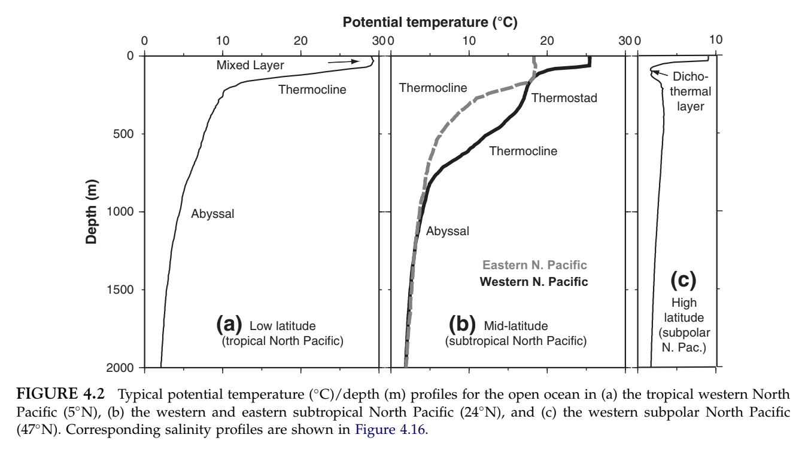
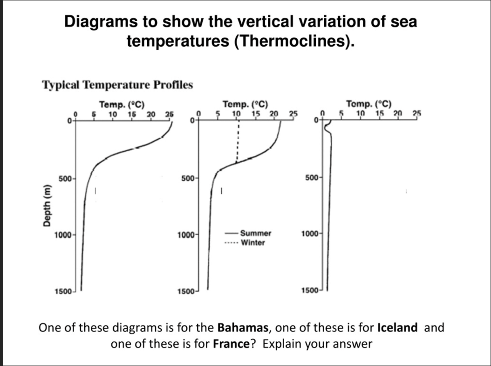
III. Water Masses
Surface water interacts with atmosphere and freshwater inputs. When that water parcel becomes dense enough, it can sink below the mixed layer.
Water mass temperature and salinity are conserved properties
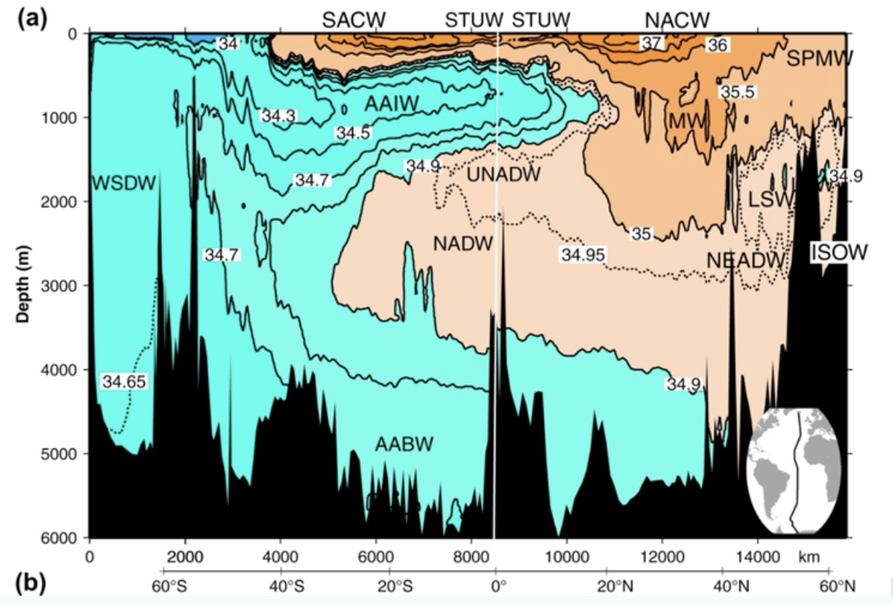
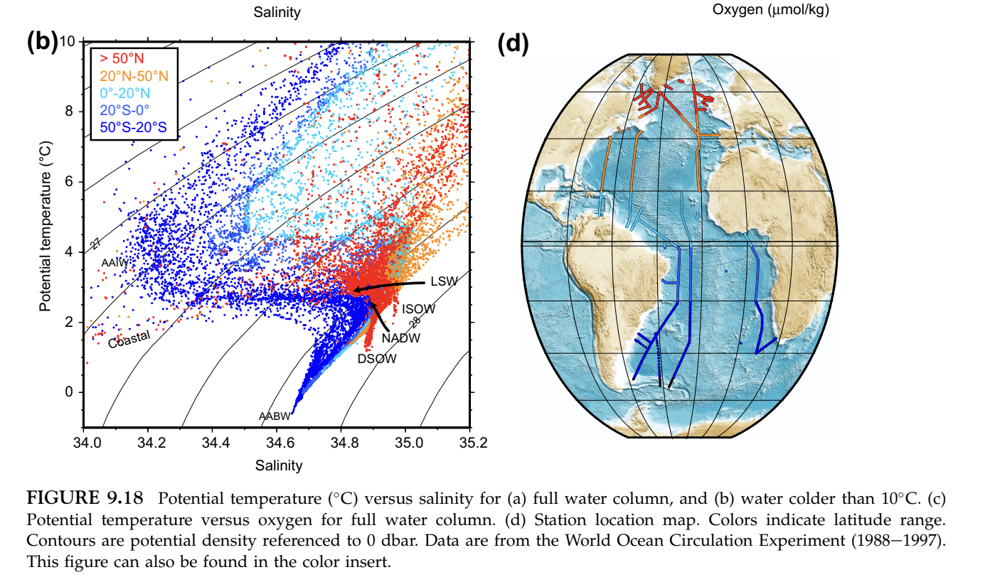
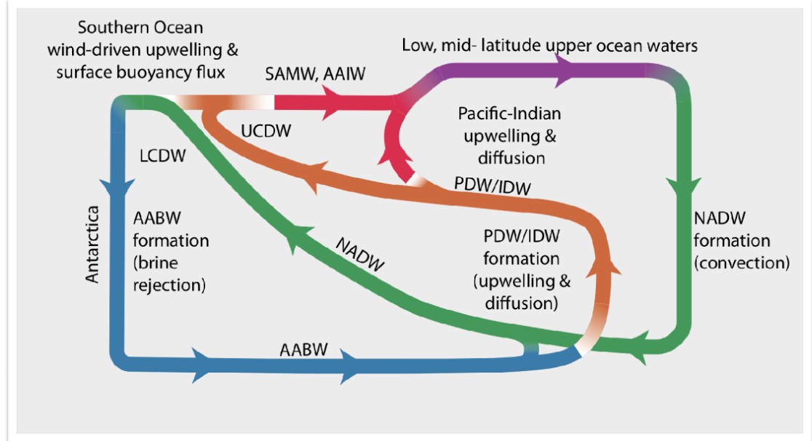
Math skills: linear interpolation
Two water masses meet and mix. You measure a sample of water with a temperature of 6°C and a salinity of 35.05 PSU. You know that the two water masses that mixed to form this sample have the following properties:
Water Mass A: T = 4°C, S = 34.90 PSU
Water Mass B: T = 12°C, S = 35.50 PSU
What fraction of the sample came from A?
Hint: if a fraction \(f\) came from A, then $ T_{sample} = f * T_A + (1-f) * T_B $
Math skills: systems of equations, linear algebra
You collect a sample from 2000 m in the South Atlantic. Three water masses are known to be present in this region, and you have their source characteristics:
Antarctic Intermediate Water (AAIW): T = 4°C, S = 34.20 PSU
North Atlantic Deep Water (NADW): T = 3°C, S = 35.00 PSU
Antarctic Bottom Water (AABW): T = 0°C, S = 34.60
Your sample: T = 2.5°C, S = 34.70 PSU
Let \(f_1, f_2, f_3\) be the fractions of your sample that originated from AAIW, NADW, and AABW respectively.
Write down three equations relating the unknowns to the measurements.
Solve for \(f_1, f_2, f_3\)
Suppose you suspected a fourth water mass was also present. Could you solve for four fractions using only T and S? What would you need to measure instead?
IV. Effects of Earth’s Rotation
Free body diagram
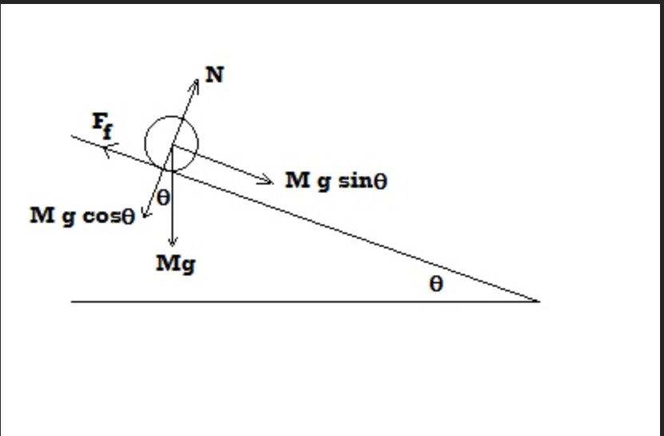
Forces acting on the ball:
gravity
normal force
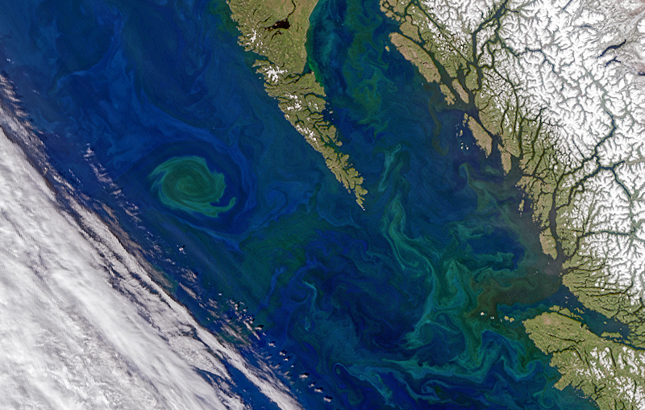
SSH from satellite altimetry:
what direction is the flow?
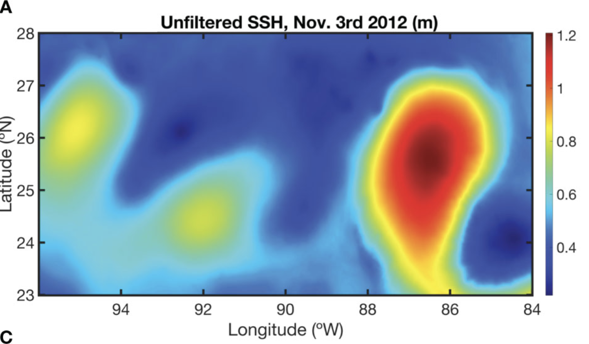
(Ernst, P et al. (2023)’Characterisics of submesoscale eddy structures within mesoscale eddies in the Gulf of Mexico from 1/48° ECCO estimates)
Forces acting on the water parcel:
pressure gradient force
Coriolis “force”
Coriolis is a fictitious force that arises from the rotation of the Earth. It is responsible for the deflection of velocity to the right in the Northern Hemisphere and to the left in the Southern Hemisphere.
It can be explained quantitatively as:
where \(\Omega\) is the angular velocity of the Earth and \(\phi\) is the latitude.
When the PGF and the coriolis force are equal in magnitude and opposite in direction, the flow is said to be in geostrophic balance. Flow will be along the isobars and perpendicular to the PGF
To decide if the Coriolis force is important, we use the Rossby number, which is the ratio of inertial to Coriolis forces:
where U is the characteristic velocity, L is the characteristic length scale, and f is the Coriolis parameter.
If Ro << 1, then Coriolis is important. If Ro >> 1, then Coriolis is negligible.
Approximate the Rossby number of the following and decide if Coriolis is important:
a toilet bowl?
Lake Erie?
a hurricane?
The Kuroshio current?
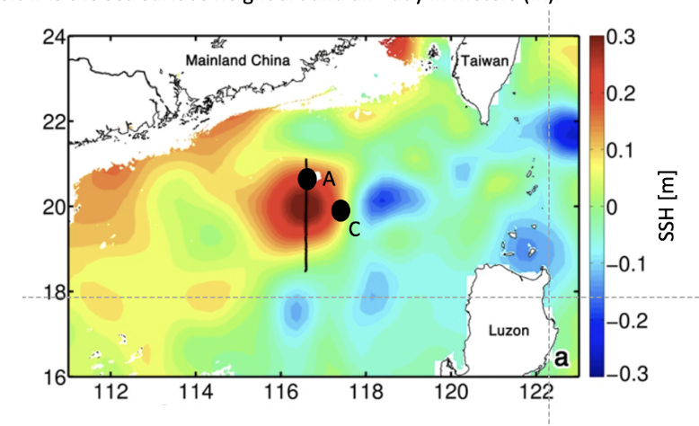
What is the Rossby number of the eddy? Assume a characteristic velocity of 0.5 m/s and a characteristic length scale of 150 km.
At point A, what direction is the pressure gradient force?
Using the hydrostatic balance, what is the difference in pressure between water in the middle of the eddy under 0.3m of anomaly of SSH vs outside the eddy where SSH anomaly = 0?
What is the zonal (u) geostrophic velocity at point A? Assume the latitude is 20°N.